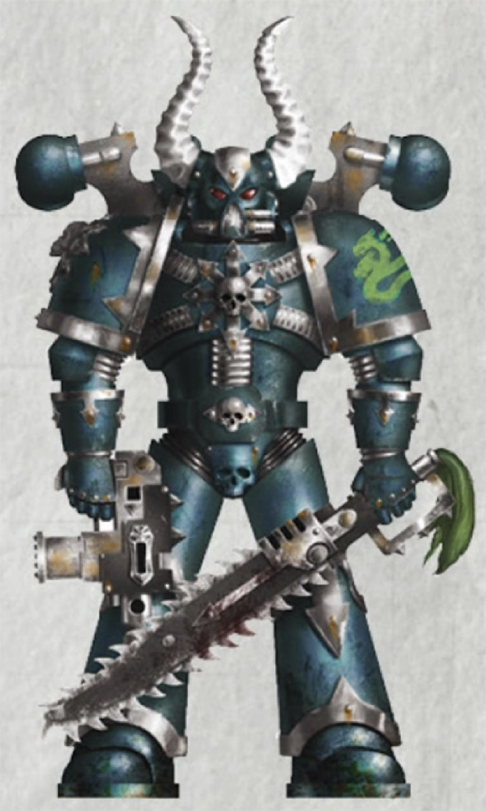

Alpha Legion
| Alpha Legion XX Legion · the Hydra · the Ghost Legion | |
|---|---|
The hydra of the Alpha Legion | |
| Founding | First Founding, c. 700.M30[a], in the late Unification Wars; recognised as an active Legion only in the Great Crusade |
| Legion number | XX |
| Primarch | Alpharius Omegon (found 981.M30); twin brothers sharing one name |
| Homeworld | Unrecorded; the Legion has no known seat and keeps many hidden bases |
| Allegiance | Loyalist (publicly, until 005.M31); Traitor, nominally Chaos Undivided; true allegiance disputed |
| Colours | Sea blue, emerald green and silver; many other liveries have been recorded |
| Battle cry | "Hydra Dominatus!"; "I am Alpharius" |
| Organisation | Before: Harrows, Hosts and Splinters. After: autonomous warbands and cells |
| Notable battles | |
| Tesstra Prime; Drop Site Massacre; Deliverance; Chondax; Alaxxes Nebula; Battle of Pluto; Eskrador (disputed); the 13th Black Crusade | |
| Notable members | |
| Alpharius, Omegon, Ingo Pech, Thias Herzog, Armillus Dynat, Autilon Skorr, Sheed Ranko, Kel Silonius, Arkos the Faithless, Vykus Skayle, Exodus | |
The Alpha Legion, the XX Legion of the Space Marine Legions, is the Traitor Legion of whom the least is known. It was the last of the Emperor's armies to be raised into the open and the last to be joined to its primarch, and from the first it fought in a manner that its brothers found distasteful: by infiltration, sabotage, false flags and the attack from every direction at once, with weight of arms used only to finish a thing already broken. Its symbol is the hydra, which grows two heads for every one cut off. It was one of the Legions that followed Horus into rebellion, and the Imperium has never learned why. The explanation that it chose treachery out of ambition is the simplest. An older and darker reading, kept by the Inquisition, is that it chose it as an act of loyalty.[1]
After the Heresy the Alpha Legion did not retreat into the Eye of Terror. It went east, fought the Ultramarines, and split into small and independent warbands that vanished into the Imperium's empty places. It has remained there since. The High Lords of Terra have declared it destroyed three times, in the 31st, 32nd and 39th millennia, and each time a new uprising has shown the declaration false. In the Era Indomitus, with the Imperium cut in two by the Great Rift, the Legion is held by the Ordo Malleus to be more dangerous than at any time since the Heresy, and no Imperial authority can say whether either of its primarchs is alive.[2]
History
[edit]The Ghost Legion
[edit]The XX Legion's earliest history is the most obscure of any. Its gene-seed was the last of the twenty to be used, and the Emperor kept its creation under a secrecy far greater than that which covered the rest. In the earlier years of the Great Crusade the other primarchs knew it only as a rumour, a Ghost Legion. During the Rangdan Xenocides a representative of the Legion appeared before Lion El'Jonson, called himself Alpharius, and said that the primarch had not yet been found, but would be. He offered the Legion's help in the war, and expressed the hope that the Lion might one day be made Warmaster, since the two of them shared similar views on war and on secrecy.[3]
The Legion emerged as an active force in its own right late in M30,[a] either in the decade before the Farinatus Extermination or as an unlooked-for reinforcement in the darkest days of the Third Rangdan Xenocide. Imperial accounts differ by thirty years. By any account it was the last Legion to be recognised, and the last to be reunited with its primarch, in 981.M30, and its choice of name, the Alpha, which in the old script means the first or the beginning, was held by many to be a perverse joke. Others saw it as a statement of intent. The Legion's early icon was the Alpha and the Omega in chain, and the hydra of the Lernaean myth was added to it by the time of the Heresy.[3]
The Harrowing
[edit]The Legion arrived complete, as if it had sprung whole, with tens of thousands of Legionaries and a war fleet that served with veteran skill. The Imperial logisticians could not confirm its recruiting grounds, its livery or its strength. It operated under names of its own, among them the Unbroken Chain and the Harrowing, the latter being the name that its warriors used in the Perfidian Gap Extermination for the final assault of a campaign, in which a prepared enemy was struck from a hundred directions at once. Its warriors called themselves by the name of the primarch, or "One of Many", and the Remembrancers noted in at least one case that the code names used by a battalion of the Legion corresponded exactly to the population of a rebel world that the Legion had earlier exterminated.[3]
The Alpha Legion's way of war earned it more notoriety than fame. On Tesstra Prime, whose capital could have been taken at once, it allowed the defenders to dig in and destroyed them by ambush, sabotage and apparent misfortune, until the garrison surrendered after losing ninety per cent of its strength. Asked why, Alpharius answered that the simple course would have been too easy. Roboute Guilliman called the operation a waste of ordnance. Only Horus admired it. The Legion's refusal to take orders from other Legions' commanders led to quarrels with Guilliman and Mortarion after Ullanor in 000.M31 and in the Vasalius Uprisings, and with Leman Russ, whose dislike of trickery was well known.[4]
Why the Legion fell
[edit]The cause of the Legion's rebellion is the most disputed question of the Heresy. The public record gives a short answer: the Alpha Legion was Horus's only friend among the Legions of the Great Crusade, and followed him. The Inquisition's sealed account is longer. It holds that some years before the Heresy, during the compliance of Nurth in about 999.M30,[a] Alpharius and Omegon were approached by an alliance of xenos, led by the Aeldari and called the Cabal, together with the Perpetual John Grammaticus. They showed the primarchs two futures. In the first the Legion remained loyal and the Emperor won, was entombed in the Golden Throne and left humanity to ten thousand years of decline. In the second the Legion joined the Warmaster, and the Emperor's death was followed by a long ruin that ended in a better age. The Legion, according to this account, chose the second.[1]
The Inquisitorial authors of this reconstruction note that it has never been confirmed. The Cabal may have lied, or been in error, or been the instrument of the powers it claimed to resist, and the outcome of the Heresy did not match either vision. The Legion has never explained itself. The same doubt has been applied to the Alpha Legion's conduct since, and at least two inquisitors have written that the Legion's attachment to Chaos is the greatest deception it has ever practised.[1]
The Horus Heresy
[edit]
The Legion revealed itself at Isstvan V in 006.M31, in the second wave of the Drop Site Massacre, where it joined the Traitor Legions in the destruction of the Raven Guard, Salamanders and Iron Hands. For much of the rest of the war it fought in places and ways that the other Legions' chroniclers could not describe, and its role in the loyalist and Traitor accounts is often contradictory. On Deliverance its agents, disguised as the dead of Isstvan V, entered the Raven Guard and contaminated the primarch's new gene-material, so that aspirants turned into monsters; the Raven Guard killed every one of the infiltrators, but the research was ruined.[1]
In the Chondax System, in 006–007.M31, the Legion was sent to blockade the White Scars, and the result was ambiguous. A relay that jammed astropathic messages was destroyed at Omegon's order, and Dorn's summons reached Jaghatai Khan. In the Alaxxes Nebula, in 007.M31, the Legion attacked the Space Wolves, and, teleporting its Lernaean Terminators onto Russ's flagship, came near to victory. A Dark Angels fleet arrived and the Alpha Legion fell back. In the secret facility called Lerna 2-12 one of the primarchs, presumed to be Alpharius, spent a time disguised as the Iron Hands commander Shadrak Meduson, and was recognised only at the end.[1]
As the defences of the Sol System took shape, the Legion used agents that it had placed in the system decades before. They entered the Palace's Investiary and destroyed all but two of the statues of the primarchs, those of Alpharius and of Dorn, and left a message for the Imperial Fists. Then came the Battle of Pluto, in 010.M31. Alpharius brought over two hundred ships into the system by placing their crews in stasis for a year, while his agents drew the defenders' attention with terrorist attacks. His aim was Hydra, a fortress moon that served as the astropathic monitoring station. Sigismund of the Imperial Fists defended it, and Dorn arrived in the Phalanx. The primarchs duelled in the astropathic chamber, and Dorn killed Alpharius with his own spear. The fleet withdrew, and Omegon, who had felt his twin die, took his brother's name.[5]
The Legion did not go on to Terra. It spent the rest of the war in delaying actions, defeating a White Scars force on Tallarn in 010–012.M31 and a Space Wolves force on Yarant in 012.M31, and when Horus fell it did not follow the other Traitors into the Eye of Terror.[5]
Eskrador and the hidden war
[edit]
An older tradition, kept by the Ultramarines, places the death of Alpharius after the Heresy, during the Great Scouring of 014–c. 021.M31, on Eskrador, in the east, where Guilliman led a strike force against the Legion. In this account Alpharius, who believed he could read Guilliman's methods, set a trap for the Ultramarines' Codex-bound tactics. Guilliman broke from his own manual, moved a large force by night into the mountains behind the Alpha Legion's lines, and killed Alpharius in single combat. The Legion then turned on the pursuing Ultramarines and mauled them, and Guilliman left the world with an orbital bombardment. The Ultramarines have long suspected that the death was staged. In the accepted account, based on the Imperial Fists' records of Pluto, Alpharius was already dead, and the body that Guilliman burned was Omegon or another warrior in the primarch's armour. The Legion has not clarified the matter.[6]
After Eskrador the Legion divided into small, autonomous warbands, which hid in asteroid fields, space hulks and uninhabited worlds. They raided Imperial shipping and garrisons weakened by the Heresy and began the work that has since defined them: the spread of Chaos cults on Imperial worlds and the use of those cults to draw the Imperium's forces to the wrong place. The Ordo Malleus and the Ordo Hereticus have devoted heavy resources to finding the Legion's bases, and several have been destroyed. The Legion has not been affected by the great mutation that has overcome the other Traitor Legions, and some inquisitors have taken this as a sign of a continued secret loyalty to the Emperor, and others as a sign that the Legion has kept itself from the Warp.[6]
The Era Indomitus
[edit]Alpha Legion warbands were among the many that joined Abaddon's 13th Black Crusade, and in the fighting around Cadia they were reported by the Astra Militarum on several fronts at once, which is held to be consistent with the Legion's practice. After the Fall of Cadia and the opening of the Great Rift, Imperial authority has been lost on thousands of worlds, and the cults that the Legion nursed in the dark have been given their time. The Inquisition has recorded an increase in coordinated uprisings that have no apparent leader, and has traced a number of them to Alpha Legion cells that were activated in the weeks after the Astronomican failed.[2]
The Legion's relations with the other Traitors are as wary as ever. It has worked with the Word Bearers in Black Crusades, and against them in the Imperium's backwaters. It has used the Drukhari when the use was convenient. Its agents have been reported in the Imperium's high places in strange numbers. In the Era Indomitus it is at once a danger on the frontier and a presumed hand inside the Imperium's own organs. The Inquisition treats any report of an Alpha Legion primarch as an event of the first order.[2]
Organisation
[edit]Before the Heresy
[edit]The Legion's structure was as little known to the other Legions as its livery. It was divided into Hosts, whose sub-formations were called Harrows, and the Legion's formal ranks had names of their own. Its senior officers included a First Captain, Ingo Pech, and a Second Captain, Thias Herzog, both of whom resembled the primarch; Harrowmasters such as Armillus Dynat and Kel Silonius; and Consul-Delegati, among them Autilon Skorr, who is recorded on the Great Crusade's council of war seven times. The Lernaean Terminators, under Sheed Ranko, were the Legion's heavy elite. A body of agents called sparatoi, who were not Legionaries, served the Legion in the Imperial Army and the Mechanicum, and a corps of infiltrators known to the Legion as Splinters worked alone, in isolation, without regard for their own survival or that of the forces around them.[4]
Recruits were put through trials as squads, not as individuals. If one failed, all failed. The Legion put a premium on intelligence and initiative, and its early recruits were notably tall. Its warriors were shaven, and many had their faces altered to resemble the primarch, so that a Legionary could stand in for Alpharius whenever it served. The Legion's decisions were made, within the limits of a military order, in open discussion, in which any rank, including its non-Astartes operatives, could speak.[3]
The warbands
[edit]The Alpha Legion's present organisation is almost wholly unknown. A killed officer is replaced without a visible effect on the Legion's operations, and Imperial attempts to find its commanders have repeatedly found a warrior in the armour of a famous leader who proves to be a recruit, or an unremarkable line trooper who proves to be the planner of a sector-wide conquest. The Legion's known warbands include the Daggerfangs, the Faithless, the Unsung, the Shrouded Hand, the Serpentine Scourge and the Third Harrow. Its leaders in recent records include Arkos the Faithless, who has claimed the title of Scion of Alpharius, and the Chaos Lord Vykus Skayle of the Daggerfangs, who has since been killed. They are rarely the same persons for long.[6]
Combat doctrine
[edit]The Alpha Legion's doctrine, Hydra Dominatus, rests on the idea that an enemy cannot be decapitated if his commander cannot be found. The Legion's warlords are rarely where they appear to be. Before the Heresy it favoured freedom of movement and portable firepower, with reconnaissance and infiltration units to open an operation, and fast armour, air support and mechanised infantry to follow. Its commanders watched an enemy's weakness come to light under the pressure of feints and ambushes, and then brought the whole weight of reserves, heavy armour and artillery against it.[4]
Since the Heresy the Legion has used the same method on a smaller scale. A campaign opens with years of preparation. Spies, bribery, forged orders, sabotage of supply, tampering with a world's atmosphere or tectonics, and the work of local cults prepare a target to fail, and the Legion's warriors, who may be disguised in enemy colours, deal the final blow with a strength that is a fraction of the enemy's. Combat is only one part of the plan. The Legion has taken ships by seizing their astropaths, and cities by having the garrison ordered to march away.[6]
Beliefs
[edit]
The Legion lives by the teaching of its primarch, who believed that only through planning and coordination could an objective be achieved, and that a plan should always have alternatives. It holds that the overall purpose is worth more than the life of any one warrior. Its members, asked by an outsider for a name, answer that they are Alpharius, and this is a doctrine as well as a trick: the Legion is a body of one that can strike in many places at once. Its warriors do not seek fame and wear no personal marks of rank.[6]
What the Legion believes about Chaos is not known. Its warbands raise cults and use daemons where daemons will serve. They shout the names of the Ruinous Powers. Many of its warlords are known to worship them. Others, the Inquisition has reason to think, do not, and a few warriors have been taken alive who have said, in the last extremity, "For the Emperor." The Imperium has been unable to decide whether this is a final deception or an unguarded truth.[6]
Homeworld
[edit]The Legion's recruiting world is not recorded, and several worlds have been named by the Legion itself in captured documents, none of them verified. It has no fortress and no capital. Its bases are scattered through Imperial space and beyond, among the hulks of the Imperium's lost ships, in asteroid fields and on empty worlds, and some are held to be hidden in the middle of Imperial systems that have no idea of them.[6]
Gene-seed
[edit]The Alpha Legion's gene-seed is held to be stable. Its Legionaries have not shown the mutations that afflict other Traitor Legions, and no Apothecary has found in it the defect that is so evident in the seed of the Word Bearers or the Thousand Sons. This is among the grounds on which some of the Imperium's inquisitors suspect that the Legion is not as far gone in the service of Chaos as it claims. Another reading is that the Legion has taken its recruits from the cultists it has made and has avoided the usual forms of possession.[6]
Heraldry
[edit]Unlike the other Traitor Legions, the Alpha Legion kept its colours after its fall: sea blue, silver and emerald green, in a livery that the Legion chooses to show in some places and to obscure in others. It has been recorded in pale grey, steel, bronze, black, indigo and amaranth, and has fought without marks of any kind. The scaled cloak is the most prized relic of its operatives. A Legionary who falls leaves his cloak to his brothers, and it is often worn by the least experienced member of a warband, since the Legion has no use for a leader who draws the sniper's eye. The Legion's early icon was a chained alpha and omega, and the three-headed hydra, which replaced it before the Heresy, is now carried on its banners and its vehicles.[6]
Notable members
[edit]- Alpharius Omegon, primarch; twins sharing one name
- Ingo Pech, First Captain
- Thias Herzog, Second Captain
- Armillus Dynat, Harrowmaster, the Griefbringer
- Autilon Skorr, Consul-Delegatus, the Hydra's Headsman
- Sheed Ranko, master of the Lernaean Terminators
- Kel Silonius, Harrowmaster, who took the moons of Pluto
- Chaitin, Legate, who refused to follow the primarchs into treachery
- Exodus, an assassin of the Legion, perhaps several warriors
- Arkos the Faithless, Chaos Lord, Scion of Alpharius
- Vykus Skayle, Chaos Lord of the Daggerfangs
- Kernax Voldorius, Daemon Prince, hunted by the White Scars
Timeline
[edit]| Date | Event |
|---|---|
| c. 700.M30 | The XX Legion's gene-seed is the last of the First Founding to be used; its creation is kept secret.[a] |
| c. 839–890.M30 | A warrior calling himself Alpharius meets Lion El'Jonson during the Rangdan Xenocides. |
| Late M30 | The Legion emerges as an active force, the last to be recognised.[a] |
| 981.M30 | Alpharius takes command of the XX Legion. |
| c. 999.M30 | The compliance of Nurth; the Cabal approaches the primarchs.[a] |
| 000.M31 | The Ullanor Crusade; quarrels with Guilliman and Mortarion follow. |
| 002.M31 | The Legion pursues the Ork remnants of Ullanor into the Kayvas Belt. |
| 006.M31 | The Legion reveals its treachery in the second wave of the Drop Site Massacre on Isstvan V. |
| 006–007.M31 | The blockade of the White Scars at Chondax. |
| 007.M31 | Battle of the Alaxxes Nebula against the Space Wolves. |
| c. 008.M31 | Agents infiltrate the Raven Guard on Deliverance and ruin the Raptor programme.[a] |
| 010.M31 | Battle of Pluto: Rogal Dorn kills Alpharius; Omegon takes his name. |
| 010–012.M31 | Delaying actions on Tallarn and, in 012.M31, at Yarant. |
| 014–c. 021.M31 | The Legion fights the Ultramarines at Eskrador in the Great Scouring and splits into hidden warbands.[a] |
| M31, M32, M39 | The High Lords of Terra declare the Legion destroyed three times. |
| 999.M41 | Warbands fight in the Thirteenth Black Crusade around Cadia. |
| Early M42 | Sleeper cults rise across the Imperium after the Great Rift opens. |
See also
[edit]Notes
[edit]References
[edit]- ^ a b c d e Chronicles of the Heresy (sealed). Logos Historica Verita, Terra.
- ^ a b c Records of the Indomitus Crusade (ongoing). Office of the Lord Commander.
- ^ a b c d Carpinus (c. 010.M31). Speculum Historiale. Remembrancer Order.
- ^ a b c Records of the Horus Heresy (c. M32). Logos Historica Verita, Terra.
- ^ a b The Siege of Terra: Accounts of the Palace Defenders (M31, revised M32). Imperial Fists Archive, Terra.
- ^ a b c d e f g h i Codex Imperialis (rev. 980.M41). Adeptus Terra.